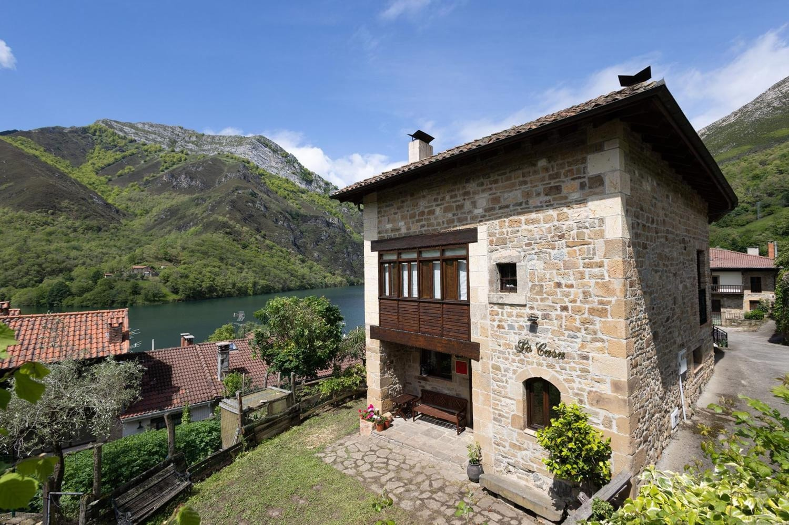
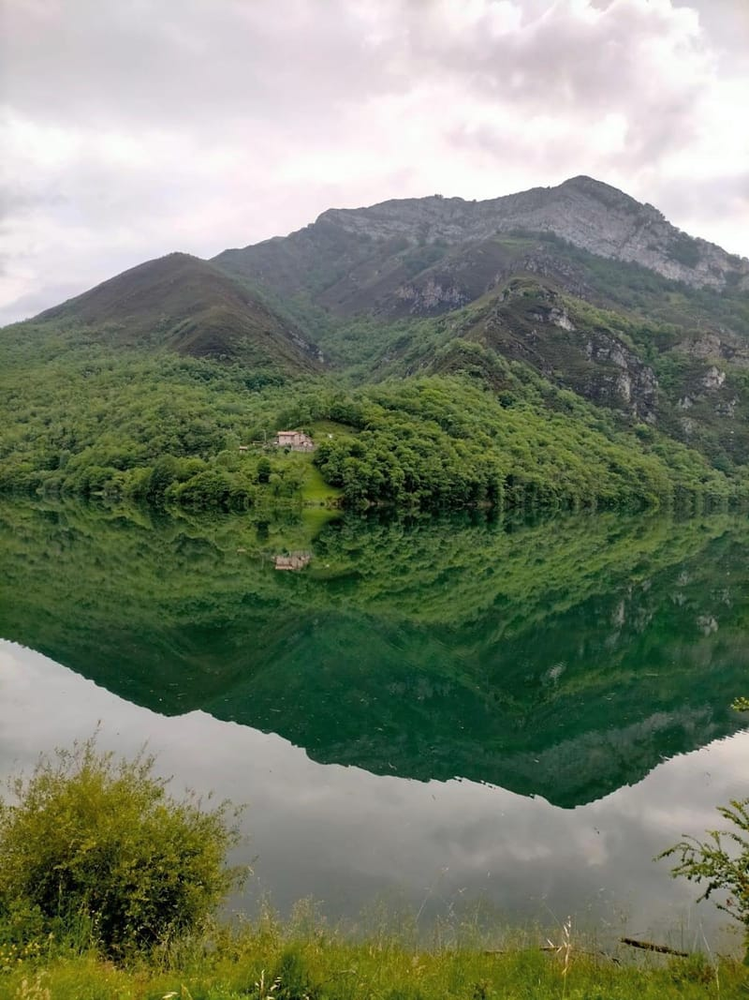
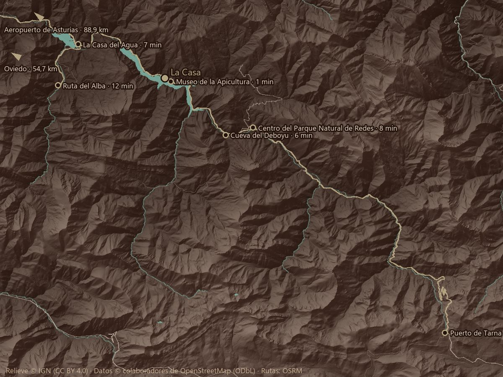

Estudios y apartamentos boutique sobre el embalse de Tanes
Una casona de piedra en el Parque Natural de Redes. Todas las estancias miran al sur.
Cada una con su color
Estudios y apartamentos en una casona de piedra. Todos con cocina equipada, baño propio y vistas a la montaña y al embalse.
- viajeros
- 14
- dormitorios
- 5
- todas las estancias
- Sur
Viajeros y dormitorios, según su ficha de Airbnb (por confirmar con la casa). Todas las estancias, orientadas al sur.
-
Paredes de almagre en salones y comedores.
-
Baños de azulejo verde botella, con el lavabo a juego.
-
Cocinas con azulejo a cuadros rojo y negro junto a la piedra.
-
Baños de azulejo ocre.
-
Sofás azules en los salones.
-
Un dormitorio de pared amarilla bajo la cubierta.
Cada estancia tiene su color. Cuál es cuál, y cómo se llama cada una, por confirmar con la casa.
En cada estancia
- Cocina equipadaNevera, placa, microondas, tostadora, cafetera, hervidor, té y café
- Baño propioDucha, secador, toallas y artículos de aseo
- Orientada al surVistas a la montaña y al embalse
- Calefacción
- TV de pantalla plana
- Plancha
En la casa
- Wi-Fi gratis
- Aparcamiento gratis
- Patio y jardínCon mobiliario y zona de picnic
- Se admiten mascotas
Fuera
- SenderismoEn el Parque Natural de Redes
- PiragüismoEn el embalse
- ExcursionesTe ayudan a reservarlas
La casa, de un vistazo
| Viajeros | 14, según Airbnb (por confirmar) |
|---|---|
| Dormitorios | 5, según Airbnb (por confirmar) |
| Estancias | Estudios y apartamentos (cuántos, por confirmar) |
| Cocina | Equipada, en cada estancia |
| Baño | Propio, con ducha, en cada estancia |
| Orientación | Al sur, con vistas a la montaña y al embalse |
| Entrada | De 15:00 a 21:00, autónoma |
| Salida | De 08:00 a 11:00 |
| Mascotas | Se admiten |
| Wi-Fi y aparcamiento | Gratis |
| Registro | AT 1490 AS |
Todo mira al sur
La casa por estancias, empezando por lo que se ve desde las ventanas. Pulsa una foto para verla grande.
Las ventanas
Todo mira al sur: desde dentro, el embalse y las peñas de Redes.
Salones
Piedra, vigas de madera y un sofá frente a la ventana.
Cocinas y comedores
Cocina completa en cada estancia, con su mesa para comer mirando fuera.
Dormitorios
Camas de hierro y de madera, bajo la cubierta o con la ventana al jardín.
Baños
Un baño propio en cada estancia, de azulejo verde botella u ocre.
La casa por fuera
Una casona de piedra sobre el embalse, con su galería de madera y su jardín.
El espejo de Tanes
Las peñas de Redes bajan hasta el embalse y, en los días quietos, se ven dos veces. La casa está en la orilla, en el pueblo de Tanes.

Redes alrededor
El Museo de la Apicultura, a un paseo. La cueva del Deboyu, la Casa del Agua y la Ruta del Alba, a unos minutos por la AS-117. El Puerto de Tarna, al fondo del valle.

Pasa por un sitio de la lista o pulsa en el mapa: sale su camino por carretera desde la casa.
En el valle
Por Redes
Para llegar
Tiempos y caminos en coche desde la casa, por carretera, calculados con OSRM sobre datos de © colaboradores de OpenStreetMap el 25 de noviembre de 2026: sin tráfico ni paradas, orientativos. Relieve: MDT05, MDT25 y MDT200 del Instituto Geográfico Nacional (CC BY 4.0, © IGN). La Casa del Agua está en Rioseco (el tiempo es hasta el pueblo); conviene mirar su horario antes de ir.
Lo que dicen quienes han estado
9,2 sobre 10, con 205 reseñas en Booking
4,6 sobre 5, con 18 reseñas en Google
Ver fechas
Elige llegada, salida y cuántos sois: así se vería su propio motor de reservas.
Simulador Así funcionaría un motor de reservas propio. No reserva, no envía ni guarda nada y no pide datos. Los días ocupados y los precios son supuestos.
LlegadaElige día
SalidaElige día
LibreOcupado (simulado)Temporada alta (supuesta)
Elige el día de llegada.
- Noches
- 0
- Precio por noche (orientativo)
- de 68 a 75 €
- Total orientativo
- elige fechas
Para reservar de verdad, hoy:
Llamar al 609 05 34 98Buscarla en Booking (se abre en otra pestaña)
Cómo llegar
Tanes 933994 Tanes, Caso (Asturias)
Desde Oviedo, 54,7 km por la AS-17 y la AS-117 (unos 51 min sin tráfico). Desde el aeropuerto de Asturias, 88,9 km (1 h 12 min).